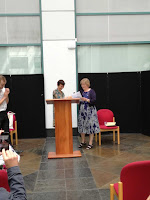
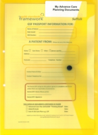

Piece of Paper 1: a Book of Pledges
 |
| Bertie applauds as Nicci presents the pledge book to CNO Jane Cummings |
{kind=link}
It was 0800 on a Monday morning. Not any Monday morning, it
was The Monday Morning that I was going to London to NHS England with the Book
of Pledges for Nicci Gerrard and myself to present to Chief Nursing Officer.
Putting it together had felt epic– but now there were half dozen neat copies,
printed out and comb-bound and right-hand-man Bertie was ironing his clean
white shirt.
I was still in my dressing gown. I’d been to bed silly late
and up silly early but all I had to do now was find something suitable to wear
and get into the car for the station.
The phone rang. It was Jo, the nurse on duty at the Moat House where
my mother lives. Mum had had a fall. She was on the floor, screaming, and the
paramedics who were already there thought she should go to hospital for an
X-ray. Jo wanted guidance.
I burst into tears. This was one of God’s bad jokes. At that
moment the trip to London seemed to represent something I had wanted and worked
for over three years. Every one of the 1400 Carers Welcome pledges now on the
Observer list had been worked for and recorded by me. Nicci had written and spoken many powerful
and beautiful words, Bertie had typed thousands (possibly millions?) of lines
of computer code but at that moment the pledge list felt like Mine-All-Mine.
I was wrong of course. Ownership of the pledges remains with the people who
made them. God must have noticed my hubris and sniggered as he spotted a way
to put the record straight.
Piece of Paper 2: a letter
My mother had also contributed words. In the early weeks of John’s
Campaign (2014) she’d insisted on writing a letter for Nicci and me to take on our
visit to the Alzheimer’s Society.
{kind=link}
Mum had visited hospital as an outpatient and had benefited
from eye treatments but had never been admitted. When endoscopic investigation was offered for possible bowel cancer, she'd declined it. Her letter and everything I
knew about her makes it clear that the only circumstances she would consent to spend time in hospital was if she needed treatment for a broken bone.
Now, aged 94, here was that suspected broken bone and
here was I, a weeping wreck in my dressing gown because I didn’t want to stay
with her in hospital, I wanted to go to London.
I rang my own daughter, Georgeanna, who Mum loves and trusts
and who works nearby. She said she could hurry to the Moat House immediately and
travel with Mum in the ambulance. As I rang Jo to tell her what was happening,
I could hear Mum’s screams. I rang Nicci and sobbed down the phone. I gave Bertie my precious pile of print-outs and a string of incoherent
instructions. Then, finally, I washed my face, got out of that dressing gown, packed
a few things in a bag and set off to the hospital, prepared to stay for as long as it took.
Piece of Paper 3: Preferred Place / Priorities for Care
 |
| The form Mum had signed four years earlier in Suffolk |
{kind=link}
I wrote down my impressions later that
evening. The section in bold is all you need to read.
Georgeanna and paramedics hand
Mum over and leave. The usual incomprehensible waiting with no idea what
happens next or how long. Mum begins to wonder about wanting a wee. Hard to know
how to help as back injury suspected.
Time passes people in
and out rather rough but cheerful person comes in grabs
trolley heaves mum off to the next stage which I suppose is assessment unit?
Another side room,
another wait. I hear outside that there is some anxiety as they have two
Hazels. I keep telling them my mother’s
preferred name is her second name, June. Usually this just causes them anxiety.
Two people – a staff nurse and another – come into the room “We hear
she’s not Compliant” one says and the other starts telling me about Mental
Capacity and how they’ll need to take bloods and Mum won’t be able to consent. They really sound threatening. I do my damnedest to say No.
To explain Mum’s situation; that she is here for an X ray on her back and
pelvis, she does not want any other
treatment, unless her bones are broken and can be mended. I feel frightened that
the staff are going to start sticking needles into Mum. She’ll fight. Then they’ll need
to restrain or sedate her. This will turn nasty.
I claim my right to speak for her. As her daughter who visits every
day. I try the phrase ‘her primary carer’. They ask if I have power of attorney
papers. I start the usual explanation that ours is an ‘enduring’ not a ‘lasting’ POA,
that my brothers have the document but decisions of daily care are delegated to me. I mention that the CCG (Clinical Commissioning Group) has recently accepted my right to
advocate for Mum, as her Continuing Health Care needs have been assessed.
They say that none of this matters. Even if I had POA papers with me they
would be following their own judgement what’s in Mum’s best interests. I get cross.
They have only just met Mum they know nothing about her, they're struggling even with
her name! How can they make such an
assessment?
“You’re going to treat her against her will?”
“Oh no,” and they begin to explain that this won’t be against her will
because they’ll have done a Mental Capacity Assessment. I assume this means
that they’ll assess that she hasn’t the capacity to consent or withhold consent
at this stage in her life -- therefore nothing can be said to be 'Against her Will'. Treatment will therefore be assessed to be in her Best Interests. Whether she wants it
or not.
“No!” I say, -- and this is my moment of inspiration. “ You can’t do
that because when Mum did have the capacity to consent, she said No. We have a
Preferred Place of Care form. It’s lodged in the Moat House with her care plan and
her DNR (Do Not Resuscitate) form.”
I begin to explain what this Preferred Place of Care form is (at least what I think it is) is but they start to look bemused and
tell me I’ll need to have that conversation with the doctor. I feel embarrassed that I haven’t noticed the other person who has
joined us. A sweet-looking young woman in a headscarf. The two
tough-talking nurses leave me alone with her.
I ask for her name (I keep asking for names). It’s D (actually I've just taken this out as don't want to embarras her). She begins
to explain that Mum may have fallen because she’s getting an infection. She
begins to tell me about all the different routine blood tests Mum should have and
probably a precautionary chest X ray. She’ll need blood pressure taken (Mum hates this!),
various samples, possibly a scan and then they’ll decide whether to admit her -- for observation. If they find she’s got a UTI (urinary tract infection) they can keep her in and give intravenous antibiotics.
I feel as if we’re on some terrifying conveyor belt going somewhere that
we never meant to go. I dig my heels in hard.
I explain that when Mum did have capacity she would not have consented
to all of this. I tell the doctor about the
Preferred Place of Care form that Mum and I filled in with her GP when she also
completed the DNR instruction. If she is getting an infection
then she wants it treated by her own GP in her own place. We have only come
here for an X ray because the paramedics were worried that she may have broken her back.
Suddenly Doctor D gets the point that we are refusing all other treatment
than what we came for – an X-ray on Mum’s back and hips – (plus whatever might subsequently be
necessary in case of a confirmed fracture). Finally
she stops explaining procedures and begins to investigate Mum's back. Mum
is fairly relaxed and so am I now. This is what we came for. Nothing much seems wrong but when the doctor tries to help Mum sit up,
she screams. A lumber X ray is ordered,
plus X ray of hips, everything else rejected. The doctor looks relieved and understanding. She explains that what I see as the conveyor
belt of 'routine' blood tests and waiting for results and further 'precautionary' X
rays and possible admission for 'observation' is “ just the way we do things here.”
I think she’s quite glad she doesn’t have to do them this time. All because of my form!
More waiting. No
water, food, comfort. I have a bottle
with me. Drip it in Mum’s mouth as best I can. Check with doctor that it’s okay
to offer Mum a biscuit. Ask for help to
get her sitting up so that mucus can clear away from her throat. There’s talk
of pain relief but nothing comes. Mum still wants a wee.
It's a while
before we are collected for X ray. There’s a moment when I hear someone say, “There’s a daughter with her. She seems to know her mother quite well.” A
security person takes the trolley. She is quick and rough. A nurse comes with
us. She doesn’t speak either to me or to Mum.
Mum is getting agitated by the time we reach
the X ray dept. She’s wanting to get off the trolley. Radiographer comes “I’m
going to put a bit of a tilt on.” She heaves up the bottom end of the bed so Mum
is unable to get out. I go along with
this restraint remembering that Mum is here because the paramedics think she may have
back damage. We need these X rays. There is no question
of me not being welcome to help with this process. I have a protective garment on and hold Mum as still as I can,
reassuring her, while they get the shots they need. It's a cleverly designed trolley; the radiographer slides her plates in underneath where Mum is trapped. The radiographer is as efficient and as kindly as she can be.
All the same Mum isn’t
liking it. Her agitation levels are increasingly hard to keep in check as we
return to assessment unit. She’s uncomfortable and I am conscious that
she still wants that wee. I tried earlier to
ask for a bed pan but all seemed too difficult when there was still a question of
possible back or hip damage.
Radiographer says there’s
no damage visible on X ray. Back in the unit the doctor confirms this. Mum is
getting really stressed and trying to climb out over the side bars of the
trolley, which is still tilted up like a soup plate. She's ordering me to go
away and leave her. I
think this is getting dangerous. I can’t leave her so I call out of the door for
a nurse to get the trolley back to normal and help her stand up. Then I ask
where the toilet is and if Mum can finally have some pain relief.
Finally we make it to the toilet and as I help Mum out of
the overnight pad she’s been wearing for so many hours. I discover a bright
pink plastic butterfly inside. Rigid two inch wingspan, can't have been very comfortable. Mum
releases the vast quantity of wee she’s been retaining and I help her back
to the side room. I ask if she can have a cup of tea. The nurse offers to make some for me as well. She’s called Zoe. This is a highpoint of our visit.
The chairs in our side
room are hard. I sit Mum down for her tea which for a while is good. But then
the discomfort increases and she is exhausted and anxious and there’s still no
pain relief and we seem to have been forgotten. She gets up and begins
to shuffle round, asleep on her feet, bumping into things. She’s obviously
desperate to rest but she can’t get back on the bed. It’s too high and I can’t
help her. Someone from the hospital dementia
team comes wanting to do an assessment. I say we don’t need an assessment, all
we need is help to make Mum comfortable and get her back to the Moat House, to Willow, the dementia
unit where she lives. He tries and fails to
help me lower the bed and goes away clutching his uncompleted form.
No one seems to have any plan for getting us
out of there. I can’t settle Mum. She continues tottering around blindly, pawing at the
walls, pulling at tubes and power cables. I ask again for pain relief. Nothing comes. I ask about transport.
No one knows so I ask if I can organise this myself. The doctor says yes but
she’ll need to complete the paperwork. She can do it straight away.
So I ring Georgeanna to
take more time away from her work and collect us.
Mum hasn’t been in a car for months but she is so heart-wrenchingly
bewildered and exhausted and agitated that I am determined we are going to get
her back to her own bed. Knowing that
she has not broken anything is a real strength.
All of this was probably worth it for that. Probably.
I make more fuss and finally
we get pain medicine. But no paperwork. Georgeanna has arrived and I decide
we’re leaving anyway. Mum is pitiably
dead on her feet. We bundle her into the car and we’re gone. Home to the Moat House and Willow Suite.
That form!
I wrote these impressions of our hospital visit when it was still fresh in my mind. Since then the Moat House care staff and I have been dealing with the repercussions of what was, for Mum, a traumatic experience. It wasn’t until today, writing this, that I looked up the piece of paper I’d so successfully cited to fend off all those precautionary measures that would have added yet more time and stress to our stay. In most places it’s not called Preferred Place of Care, it’s called Preferred Priorities of Care and it’s intended for people who are nearing the end of life. (As are we all.) I bless Mum’s GP for putting it in front of us at such a relatively early stage -- when Mum could enter into a reasonable discussion. Mum was 90 then, vulnerable and living in 'Very Sheltered' accommodation. I was sixty miles away. The doctor believed that if Mum was ill -- not necessarily dying -- she should have the option to be treated in her own place. That's what Mum wanted too.
I wrote these impressions of our hospital visit when it was still fresh in my mind. Since then the Moat House care staff and I have been dealing with the repercussions of what was, for Mum, a traumatic experience. It wasn’t until today, writing this, that I looked up the piece of paper I’d so successfully cited to fend off all those precautionary measures that would have added yet more time and stress to our stay. In most places it’s not called Preferred Place of Care, it’s called Preferred Priorities of Care and it’s intended for people who are nearing the end of life. (As are we all.) I bless Mum’s GP for putting it in front of us at such a relatively early stage -- when Mum could enter into a reasonable discussion. Mum was 90 then, vulnerable and living in 'Very Sheltered' accommodation. I was sixty miles away. The doctor believed that if Mum was ill -- not necessarily dying -- she should have the option to be treated in her own place. That's what Mum wanted too.
This seems to have been some sort of East Suffolk initiative -- but what a good idea, and how effective, even when I was in a mid-Essex hospital, citing it with such innocent confidence. Maybe we should all have one of these?
And PS if you live in England and want to know what your own hospital trust has pledged to carers -- our book is available to you https://johnscampaign.org.uk/#/voices/4
{kind=link}